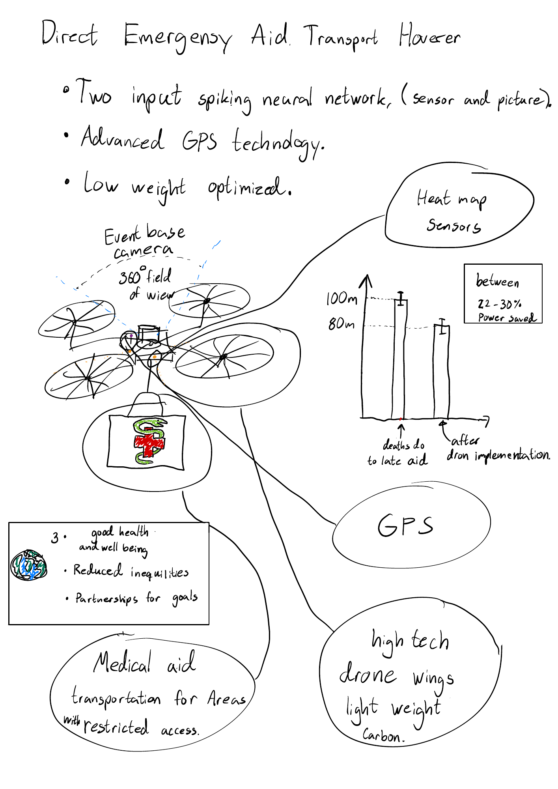

Tilgængelig energi
E = (mAh / 1000) × V × (1 − r / 100)Kapacitet omregnes til Ah og ganges med nominel spænding. Reserven r trækkes fra. Resultatet er Wh.
ET DRONEKONCEPT MED ET FORMÅL
Når vejen er svær, kan hjælpen tage en anden rute. Udforsk beregningerne bag vores koncept til en drone, der leverer medicinsk udstyr.
Fra idé på papir til tal, du kan undersøge.
 01 EVENTKAMERA
02 MEDICINSK LAST
01 EVENTKAMERA
02 MEDICINSK LAST
Direct Emergency Aid
Transport Hoverer
Let konstruktion.
Intelligent navigation.
Let ramme i kulfiber
Eventkamera & varmesensorer
Spiking neural network
Hjælp til svært tilgængelige områder
01 / MISSIONSBEREGNER
Indstil batteri, rute og last. Se, hvordan dine valg påvirker det beregnede flyveoverblik.
EKSEMPELTAL · IKKE MÅLTE DRONEDATA02 / SÆT BESPARELSEN I PERSPEKTIV
Et spiking neural network er en del af plakatens idé. Men mindre strøm til computeren er ikke det samme som tilsvarende mindre strøm til hele dronen.
I dette scenarie bruger elektronikken — W før og — W efter den valgte besparelse. Motorernes forbrug holdes konstant.
Prøv andre værdierlavere samlet effekt
i det valgte scenarie
Giver — min ekstra beregnet flyvetid med samme batteri.
03 / BAG TALLENE
Tallene er til at undersøge idéen med. Her kan du se, hvordan beregningerne hænger sammen.
E = (mAh / 1000) × V × (1 − r / 100)Kapacitet omregnes til Ah og ganges med nominel spænding. Reserven r trækkes fra. Resultatet er Wh.
t = E / (Pmotor + Pelektronik × (1 − s / 100)) × 60Energi divideret med gennemsnitseffekt giver timer. Vi ganger med 60 for minutter. s er besparelsen i %.
tmission = (d × n / v) × 60 + tleveringd er afstand én vej i km, v er km/t, og n er 2 med retur, ellers 1. Maks. afstand er v × (t − tlevering) / (60 × n), mindst 0 km.
mlast,maks. = T / (9,80665 × R) − mdroneT er samlet rotorkraft i N, og R er det valgte løft/vægt-forhold. Et negativt resultat betyder, at selv dronen uden last er for tung ved det valgte forhold.
Samme gennemsnitseffekt og fart under hele ruten, også samme effekt ved levering. Ingen særskilt model for vind, højdeforskel, acceleration, temperatur eller batterislitage. Lasten bruges i løftberegningen; den ændrer ikke automatisk effekt eller flyvetid. Energi og løft vurderes hver for sig.
Fysisk grundlag: Battery University · Wh & W ↗NASA · vægtkraft ↗

Konceptet kombinerer medicinsk transport, GPS, varmesensorer og et eventkamera. Plakaten angiver ingen konkrete batteri-, motor- eller vægtdata. Alle starttal i beregneren er derfor regneeksempler. Plakatens effektpåstande er ikke verificerede måleresultater.
Se konceptplakaten PDF ↗